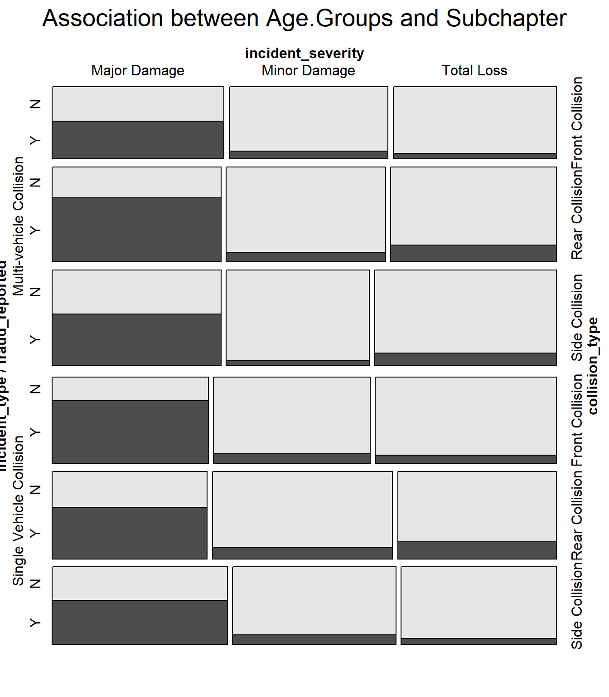
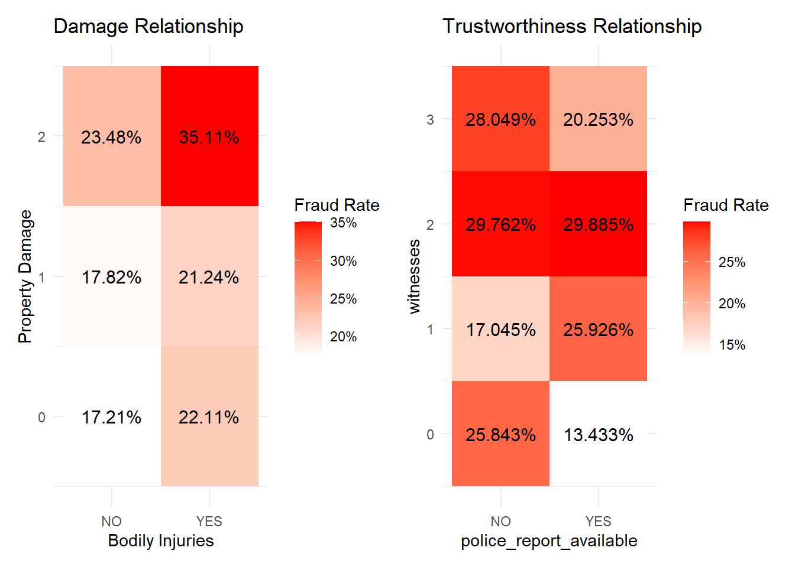
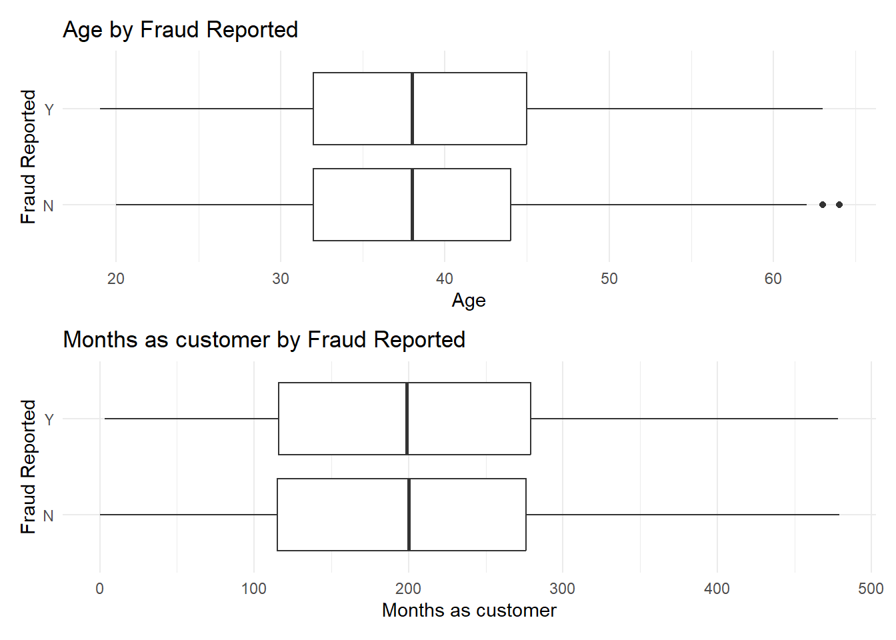
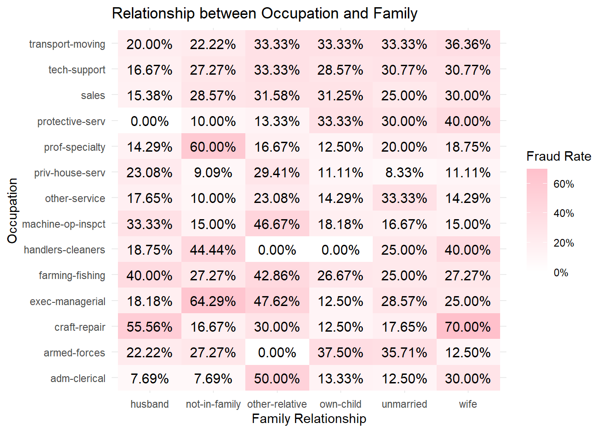
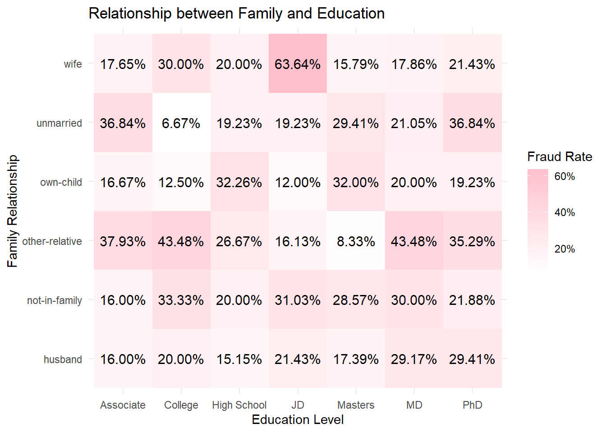
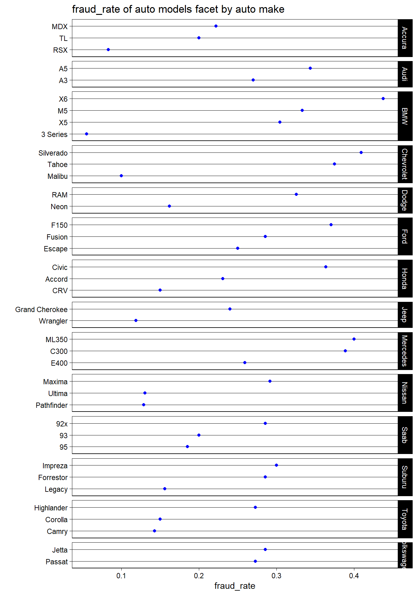

library(dplyr)library(tidyr)library(tibble)library(ggplot2)library(choroplethr)knitr::opts_chunk$set(warning =FALSE)# data preprocess data <-read.csv('insurance_claims.csv', na.strings =c("?", "NA"))data <-subset(data, select =-X_c39)
We are investigating how to explore the relationship between insurance fraud cases and existing variables. We have divided the variables into five major categories: geographical trends, incident details, policy, demographic characteristics, and vehicle-related factors. First, we will explore the connection between fraud and each of these five categories in the first five sections. Then, in the sixth section, we will attempt to find connections between combined influences of these categories and fraud.
3.1 Geographical Trends
In this part, we primarily focus on two variables: ‘policy_state,’ which means the state where the insurance policy was issued; and ‘incident_state,’ which means the state where the incident occurred.
library(choroplethr)library(ggplot2)library(RColorBrewer)map <-state_choropleth(fraud_rate_by_state, title ="Fraud Rate by Incident State", legend ="Fraud Rate") +scale_fill_brewer(palette ="Reds", name ="Fraud Rate")map +coord_fixed(xlim =c(-85, -70), ylim =c(30, 45))
This map provides a visual representation of insurance fraud rates across a selection of states where the incident happened, specifically focusing on a certain region in the United States. The data is clearly delimited to just seven states, each shaded according to the severity of the fraud rate as per the accompanying legend.
In the middle portion of the map, we can see that Ohio (OH) stands out with the darkest shade of red, which, according to the legend, signifies the highest fraud rate among the states presented. This darker hue draws immediate attention and could indicate a significant concern regarding insurance fraud within the state.
Surrounding Ohio, the states of Pennsylvania (PA), West Virginia (WV), and Maryland (MD) are shaded with a moderately lighter color. This suggests that while their fraud rates are still notable, they are less severe when compared to Ohio’s rate. Each state’s shade provides a quick visual clue to its relative position on the fraud rate scale, with the map serving as a quick reference to compare the extent of fraud rates across these neighboring states.
Further south, Virginia (VA), North Carolina (NC), and South Carolina (SC) are depicted with varying intensities of red. North Carolina and South Carolina, in particular, are colored with a darker tone, which implies that their fraud rates are relatively high, although still not as high as Ohio’s. Virginia, on the other hand, shows a lighter shade, indicating a lower fraud rate compared to its southern neighbors.
Each state’s coloration on the map is a direct indicator of the rate of insurance fraud, with darker shades correlating to higher rates.
This graph shows where do these policies come from, and only three states are highlighted, indicating the presence of data for these states.
The state of Ohio (OH) is colored with the darkest shade of red on the map, indicating the highest rate of insurance fraud in relation to where the insurance contracts were issued. The legend to the right suggests that Ohio’s fraud rate is between 25.9 and the unspecified upper limit of the scale.
Indiana (IN) is shaded with a medium intensity, suggesting a moderate rate of insurance fraud as per the legend, which places the state’s rate between 25.5 and 22.8.
Illinois (IL) appears with the lightest shade of red, signifying the lowest fraud rate among the three states, with its rate falling at or just above 22.8, the lowest value provided on the legend.
This map differs from the first in the number of states included as well as the range of fraud rates represented. The narrower range of rates suggests a more focused analysis or a more uniform distribution of fraud rates across these states. The clear visual contrast between Ohio and the other two states underscores Ohio’s prominence in insurance fraud rates for contracts originating within the state.
The alluvial diagram visually captures the complexity of relationships between the state where an insurance policy is signed, the state where the incident occurs, and the incidence of reported fraud. Starting from the left, we see policy origins in Illinois, Indiana, and Ohio, with lines flowing to the middle column representing the states where incidents have occurred. The thickness of these lines indicates the volume of policies linking to incidents in each state, with Ohio showing a particularly thick band leading back to itself, suggesting a high number of in-state incidents for policies underwritten there.
The flow towards the rightmost column, which marks whether fraud was reported, reveals significant variances. Some Incident States have a higher propensity for fraud reports, as indicated by the thicker blue bands moving towards the ‘Y’ for yes. Ohio again stands out, with a heavy flow to the ‘Y’, hinting at a higher frequency or likelihood of fraud reports for incidents connected to Ohio policies. This could point to specific vulnerabilities or enforcement challenges within the state.
Moreover, the distribution of flows from Incident States to the ‘N’ and ‘Y’ outcomes is not even, implying that while some states predominantly have non-fraudulent claims, others have a mix or a tendency towards fraud. For instance, Pennsylvania has a substantial band flowing to the ‘Y’, which could signal an area of concern for insurers and regulators alike.
The diagram’s bands, in their varying widths and directions, create a narrative of how insurance incidents and fraud reports are interconnected across state lines. The intertwining paths also suggest the potential for complex fraud schemes that span multiple jurisdictions, potentially complicating the detection and investigation processes. The data represented here, if further dissected, could be a rich resource for developing targeted interventions to mitigate fraud risks. It could also guide insurers on where to focus their efforts in terms of fraud education, prevention, and detection strategies, particularly in those states with thicker bands leading to the ‘Y’ outcome.
But the quantitative characteristics are not really obvious.
3.2 Incident Details
In this section, since there are many variables related to incident details, we will still break them down and analyze them one by one. We have divided them into 5 groups, which are capital situation, time, incident type, damage and trustworthiness, and claim amount.
3.2.1 Capital Situation
In this part, we mainly focus on two variables: ‘capital-gains,’ which means the capital gains of the insured individual; and ‘capital-loss,’ which means the capital losses of the insured individual.
Code
library(ggplot2)library(dplyr)library(tidyr)data <- data %>%mutate(id =row_number())long_data <- data %>%select(id, capital.loss, capital.gains) %>%pivot_longer(cols =-id, names_to ="variable", values_to ="value")ggplot(long_data, aes(x = variable, y = value, group = id)) +geom_line(alpha =0.06) +theme_minimal() +labs(title ="Slope Graph for Capital Loss and Capital Gain",x ="",y ="Value")
Slope graphs are excellent for showing changes between two points in time or, as in this case, between two different conditions for a number of subjects.
In the graph, each line represents an entity. The left side labeled ‘capital.gains’ shows the starting value of capital gains, and the right side labeled ‘capital.loss’ shows the resulting value of capital losses. The crossing point at ‘Value’ zero could be interpreted as the break-even point where gains equal losses.
The most striking aspect of this graph is the density of lines near the zero point on both sides, which indicates that for the majority of entities, both capital gains and losses are close to zero. This suggests a concentration of entities with minimal capital gains or losses. However, the spread of lines fanning out towards the extremes of the graph, especially on the capital loss side, indicates that there are also entities with significant losses, some reaching as high as 100,000 units in the negative. The capital gains side shows fewer entities with extreme positive values, but there are still a notable number of lines reaching toward the upper positive range.
The steepness of the slope indicates the magnitude of change from gain to loss. Steeper slopes suggest more significant changes. For instance, lines that fall steeply to the right indicate entities that have moved from a position of capital gain to a substantial capital loss. Conversely, lines that rise steeply towards the right suggest entities that have transitioned from a smaller capital gain to a more substantial gain or from a loss to a gain.
This slope graph does not just tell us about individual entities but also speaks to the overall distribution of gains and losses within the dataset. The visual impact of the dense cluster of lines near the center versus the sparse but dramatic lines toward the extremes may prompt further questions about the factors contributing to such a wide disparity in capital gains and losses.
3.2.2 Time
In this part, we mainly focus on two variables: ‘incident_date,’ which means the date of the incident; and ‘incident_hour_of_the_day,’ which means the hour of the day when the incident occurred.
Code
library(ggplot2)library(dplyr)library(lubridate)data$incident_date <-as.Date(data$incident_date, format ="%m/%d/%Y")data$fraud_flag <-ifelse(data$fraud_reported =='Y', 1, 0)fraud_rate_by_date <- data %>%group_by(incident_date) %>%summarise(fraud_rate =mean(fraud_flag))ggplot(fraud_rate_by_date, aes(x = incident_date, y = fraud_rate *100)) +geom_smooth(method ="loess", se =FALSE, span =0.3) +theme_minimal() +labs(title ="Fraud Rate by Incident Date",x ="Incident Date",y ="Fraud Rate(%)")
The y-axis indicates the fraud rate as a percentage, and the x-axis represents the date of the incident. This type of graph is commonly used to observe trends, patterns, or fluctuations in data over a specified time period.
In the graph, there are several peaks and troughs, indicating variability in the fraud rate over the given time. The first notable peak occurs shortly after January 1st, where the fraud rate approaches 30%. This is followed by a sharp decline, then another peak around mid-January. Following this, the fraud rate generally trends downward with some fluctuations, until a significant drop is observed towards the end of February, where the fraud rate dips below 20%. The rate then sharply increases again as the timeline approaches March.
These fluctuations could be indicative of various external factors influencing the fraud rate. For instance, increased fraud rates at the beginning of the year could be related to the closure of financial reporting periods, leading to a rush to meet or manipulate targets. The significant dip at the end of February could be due to the end of a financial quarter, increased vigilance from anti-fraud departments, or even seasonal trends that affect fraudulent activities.
Analyzing such a graph could provide insights for businesses and regulatory bodies into when fraud is most likely to occur, which could then inform the timing of fraud prevention and detection efforts. It’s important to consider that such a graph represents a simplified view of complex behaviors and would likely need to be supplemented with additional data and analysis to understand the underlying causes of these trends.
Code
fraud_rate_by_hour <- data %>%group_by(incident_hour_of_the_day) %>%summarise(fraud_rate =mean(fraud_flag) *100) ggplot(fraud_rate_by_hour, aes(x = incident_hour_of_the_day, y = fraud_rate)) +geom_smooth(method ="loess", se =FALSE, span =0.3) +theme_minimal() +labs(title ="Fraud Rate by Incident Hour of the Day",x ="Incident Hour of the Day",y ="Fraud Rate(%)")
The x-axis represents the 24-hour clock, while the y-axis shows the fraud rate. The graph’s shape, with its peaks and valleys, suggests that the incidence of fraud fluctuates considerably throughout the day.
Observing the pattern, there are notable peaks around the 3rd hour, 9th hour, 15th hour, and towards the 23rd hour. These times might correspond with certain daily activities or behaviors that present more opportunities for fraudulent activities to occur or be reported. For example, the peak in the early hours of the morning could correspond to a time when fewer controls are in place, while the midday and mid-afternoon peaks could align with high transaction volumes.
Conversely, the graph shows troughs or lower rates of fraud at around the 6th hour, 12th hour, and 18th hour. These could be times when vigilance is higher or when there are fewer transactions taking place, leading to a lower rate of fraudulent activity being recorded.
It’s challenging to discern a clear trend across the hours, as the graph does not follow a simple or predictable pattern. Instead, it suggests that the fraud rate is subject to multiple influences and varies significantly as the day progresses. This variability would be expected as different types of fraudulent activities might have different ‘prime times’ depending on various factors such as human behavior, business hours, and monitoring systems in place.
3.2.3 Incident Type
We mainly Focus on three variables: ‘incident_type,’ which is the type of the incident; ‘collision_type,’ which is the type of collision, if applicable; and ‘incident_severity,’ which is the severity of the incident.
Code
data1 <-subset(data, !is.na(incident_type) &!is.na(collision_type) &!is.na(incident_severity) &!is.na(fraud_reported))vcd::mosaic(fraud_reported ~ incident_type + collision_type + incident_severity, data1, direction =c('h', 'h', 'v'), main ="Association between Age.Groups and Subchapter")

The mosaic plot visualizes the characteristics of vehicular accidents in relation to insurance fraud. The ‘Y’ and ‘N’ labels distinguish between incidents that are fraudulent and non-fraudulent, respectively. The horizontal categories represent the severity of the incident—Major Damage, Minor Damage, and Total Loss—while the vertical categories indicate the type of collision—Single Vehicle, Side, Rear, and Front Collisions.
From the plot, we can observe patterns:
Major Damage has a high frequency of fraudulent claims (‘Y’) compared to non-fraudulent (‘N’). This might suggest that fraudulent claims are more likely to be filed for incidents reported with major damage.
Single Vehicle Collisions show a significant presence of fraud, as indicated by the darker shading in the ‘Y’ category. This could imply that such collisions are either prone to fraudulent claims or are more often associated with fraudulent activities.
There’s a notable difference in the frequency of fraud between different collision types. Side and Rear Collisions have a relatively balanced distribution of fraudulent and non-fraudulent claims, whereas Front Collisions seem to have a lower incidence of fraud.
The category for Total Loss has less shading overall, which could indicate fewer claims in this category, but the proportion of fraudulent claims within it is comparable to that of Major and Minor Damage. The rectangles’ size indicates the count or proportion of incidents, with larger rectangles showing more frequent occurrences. The darker the rectangle, the higher the incidence of fraud in that particular category. For instance, a large, dark rectangle in the ‘Major Damage’ and ‘Single Vehicle Collision’ categories suggests a high number of fraudulent claims are reported for single-vehicle incidents with major damage.
Understanding these patterns can be crucial for insurance companies in detecting potential fraud. For example, if Single Vehicle Collisions with Major Damage frequently result in fraudulent claims, insurers might focus their investigative resources on such incidents. Similarly, the lower shading for Total Loss incidents might prompt a review of the criteria or processes by which these claims are adjudicated.
The visualization effectively highlights the intersection of various factors with the occurrence of fraud, providing a clear representation of where fraudulent activities are most prevalent. It serves as a strategic tool for identifying patterns and potential vulnerabilities within the sphere of vehicle insurance claims.
In this alluvial diagram, the relationships among the type of incident, the collision type, the severity of the incident, and whether fraud was reported are depicted.
The diagram begins with ‘incident_type’ on the left, branching into different types of collisions such as ‘Multi-vehicle Collision’, ‘Single Vehicle Collision’, etc. These categories then flow into ‘collision_type’, which further divides into ‘Front Collision’, ‘Rear Collision’, ‘Side Collision’, and so on. Following this, the lines feed into ‘incident_severity’, which categorizes the incidents into ‘Major Damage’, ‘Minor Damage’, and ‘Total Loss’. The final set of connections flows into ‘fraud_reported’, distinguishing between incidents where fraud was reported (‘Y’) and those where it was not (‘N’).
In the visualization:
The thickness of the bands corresponds to the volume of incidents, with wider bands indicating a larger number of cases.
The color of the bands differentiates between incidents where fraud was reported (blue) and not reported (pink).
The intertwining of the bands illustrates the complex relationship between the variables. For instance, we can see that Single Vehicle Collisions have a significant flow into both ‘Major Damage’ and ‘Minor Damage’, but a notably smaller band flows into ‘Total Loss’.
There is a visible flow of blue bands (indicating fraud) across various types of collisions and severities, suggesting that fraudulent claims are not confined to any single category of incident type or severity.
This diagram allows us to observe not just the volume of incidents and fraud within each category, but also the proportions between them. For example, a thick blue band leading from ‘Rear Collision’ to ‘Minor Damage’ and then to ‘Y’ suggests a higher incidence of fraud reported in minor damages resulting from rear collisions.
3.2.4 Damage And Trustworthiness
This time we focus on four variables to explore their relationship with fraud: ‘property_damage’, which indicates if there was any property damage; ‘bodily_injuries’, the number of bodily injuries in the incident; ‘police_report_available’, which indicates if a police report is available; and ‘witnesses’, the number of witnesses to the incident.
Code
library(dplyr)library(tidyr)library(ggplot2)data1 <-subset(data, !is.na(property_damage) &!is.na(bodily_injuries))data1$fraud_reported_flag <-ifelse(data1$fraud_reported =="Y", 1, 0)fraud_rates <- data1 %>%group_by(property_damage, bodily_injuries) %>%summarise(fraud_rate =mean(fraud_reported_flag, na.rm =TRUE)) %>%ungroup()p1 <-ggplot(fraud_rates, aes(x = property_damage, y = bodily_injuries, fill = fraud_rate)) +geom_tile() +scale_fill_gradient(low ="white", high ="red", labels = scales::percent_format()) +theme_minimal() +labs(title ="Damage Relationship", x ="Bodily Injuries", y ="Property Damage", fill ="Fraud Rate") +geom_text(aes(label = scales::percent(fraud_rate)), size =4, colour ="black")
Code
library(patchwork)data2 <-subset(data, !is.na(police_report_available) &!is.na(witnesses))data2$fraud_reported_flag <-ifelse(data2$fraud_reported =="Y", 1, 0)fraud_rates <- data2 %>%group_by(police_report_available, witnesses) %>%summarise(fraud_rate =mean(fraud_reported_flag, na.rm =TRUE)) %>%ungroup()p2 <-ggplot(fraud_rates, aes(x = police_report_available, y = witnesses, fill = fraud_rate)) +geom_tile() +scale_fill_gradient(low ="white", high ="red", labels = scales::percent_format()) +theme_minimal() +labs(title ="Trustworthiness Relationship", x ="police_report_available", y ="witnesses", fill ="Fraud Rate") +geom_text(aes(label = scales::percent(fraud_rate)), size =4, colour ="black")(p1 | p2)

There are two heatmaps that show the fraud rate in relation to various factors associated with vehicle incidents.
The left chart correlates the property damage level and bodily injuries to the fraud rate. The levels of property damage are ranked from 0 to 2, and the presence of bodily injuries is indicated by ‘YES’ or ‘NO’. Each bar is color-coded to represent the fraud rate, with darker shades indicating higher rates. It’s evident that incidents with higher levels of property damage and bodily injuries have a higher fraud rate, with the highest fraud rate occurring at property damage level 2 with bodily injuries present.
The right chart correlates the number of witnesses and the availability of a police report to the fraud rate. The number of witnesses is ranked from 0 to 3, and the availability of a police report is denoted as ‘YES’ or ‘NO’. Here, we see that a higher number of witnesses correlates to a higher fraud rate, which is counterintuitive as one might expect more witnesses to deter fraudulent claims. The availability of a police report seems to have a mixed impact on the fraud rate, with the absence of a police report correlating to a higher fraud rate in cases with one witness, but a lower fraud rate in cases with two witnesses.
These charts suggest complex relationships between these variables and the incidence of fraud. The data might imply that certain scenarios, such as more severe accidents with bodily injuries, could be more susceptible to fraudulent claims. Additionally, the presence of a police report doesn’t consistently decrease the fraud rate, which could suggest that the mere availability of official documentation is not a strong deterrent to fraud.
3.2.5 Claim Amount
This time, we are primarily focusing on four numerical variables: total claim amount, claim amount for injuries, claim amount for property damage, and claim amount for vehicle damage.
Code
library(ggplot2)p1 <-ggplot(data, aes(x = total_claim_amount, y = fraud_reported)) +geom_boxplot() +theme_minimal() +labs(x ="Total Claim Amount", y ="Fraud Reported", title ="Total Claim Amount by Fraud Reported")p2 <-ggplot(data, aes(x = injury_claim, y = fraud_reported)) +geom_boxplot() +theme_minimal() +labs(x ="claim amount for injuries", y ="Fraud Reported", title ="Total Claim Amount by Fraud Reported")p3 <-ggplot(data, aes(x = property_claim, y = fraud_reported)) +geom_boxplot() +theme_minimal() +labs(x ="claim amount for property damage", y ="Fraud Reported", title ="Total Claim Amount by Fraud Reported")p4 <-ggplot(data, aes(x = vehicle_claim, y = fraud_reported)) +geom_boxplot() +theme_minimal() +labs(x ="claim amount for vehicle damage", y ="Fraud Reported", title ="Total Claim Amount by Fraud Reported")(p1 | p2) /(p3 | p4)
The image contains four box-and-whisker plots, each comparing the distribution of total claim amounts for different categories based on whether fraud was reported.
The first plot shows the total claim amount across all categories. The ‘Y’ fraud reported claims have a higher median and more variability compared to the ‘N’ non-fraudulent claims. This suggests that fraudulent claims tend to be for higher amounts and have a wider range of claim values.
The second plot focuses on claim amounts for injuries. Here, the difference between the median claim amounts for fraudulent and non-fraudulent claims is less pronounced than in the total claim amount. Still, fraudulent injury claims show a greater range and higher outliers, indicating that fraudulent injury claims can reach higher amounts than typical non-fraudulent claims.
The third plot presents claim amounts for property damage. The fraudulent claims again show a higher median than non-fraudulent claims, with a few high-value outliers suggesting that while most fraudulent property damage claims are similar in amount to non-fraudulent claims, some can be significantly higher.
The fourth plot examines claim amounts for vehicle damage specifically. The fraudulent claims show a higher median and greater variability, similar to the first plot, indicating that fraudulent claims for vehicle damage also tend to be higher and more varied than non-fraudulent ones.
In each plot, the presence of outliers in the fraud reported groups indicates that while most fraudulent claims are within a certain range, there are exceptional cases with very high claim amounts. These outliers could be indicative of more significant cases of fraud.
Overall, these visualizations suggest that fraudulent claims are generally associated with higher claim amounts across various types of damages and that there is a greater range of claim amounts within fraudulent claims compared to non-fraudulent ones. This data can be particularly useful for insurance companies when designing their fraud detection algorithms and risk assessment models.
3.3 Related To Policy
In this part, the variables are related to the policies of the insurances.
First, let us focus on the continuous variable, annual premium, which means the cost of insurance every year. Check the distribution of annual premium:
Code
p <-ggplot(data, aes(x = policy_annual_premium, y = fraud_reported)) +geom_boxplot() +theme_minimal() +labs(x ="Annual premium amount", y ="Fraud Reported", title ="Annual premium amount by Fraud Reported")p
In this boxplot, we can see for the “Y” category, there are a few outliers on the higher end, indicating that there are some annual premium amounts significantly higher than the rest. For the “N” category, the median is again just above 1000, similar to the “Y” category, but the IQR is wider than in the “Y” category, indicating more variability in the annual premium amount when fraud is not reported. There are no significant outliers for this category.
From this visual analysis, we can infer that there’s a similarity in the median annual premium amounts whether fraud is reported or not. However, when fraud is reported, the annual premium amounts tend to be less variable and with some higher extreme values (outliers). This could suggest that while the typical case for fraud reporting does not involve unusually high premiums, the instances where it does involve significantly higher premiums are noteworthy.
There are three variables left in this category:
policy_csl: Combined Single Limit (CSL) of the policy, indicating the limits of liability for bodily injury and property damage.
policy_deductable: Deductible amount for the policy.
umbrella_limit: Limit of the umbrella liability insurance, if any.
We create a alluvial and mosaic plot for annual_premium, policy_csl and policy_deductable since umbrella limit has too many values and is not that vital in our research.
We divided the annual premium into 3 categories according to values, which are “low”, “medium”, “high” respectively:
In this alluvial diagram, the relationships among the CSL, Deductable, premium, and whether fraud was reported are depicted.
Then we have some observations:
The “250/500” limit combined with a “1000” deductible seems to be a common policy choice, with a moderate number of these falling under the “medium” premium category.
There’s a significant flow from the “500/1000” limit with a “2000” deductible going to the “high” premium category, but the majority of these do not have fraud reported.
Fraud seems to be more frequently reported in the “low” and “medium” premium categories than in the “high” premium category.
It seems that higher deductibles are not necessarily associated with a higher incidence of reported fraud. Conversely, lower premium categories, which might be associated with less coverage or perceived value, may see more fraud reports.
Code
library(vcd)label_text_size <-gpar(cex =0.5)vcd::mosaic(fraud_reported ~ policy_csl + policy_deductable + premium_category, data, direction =c('h','h','v'), main ="Association between Combined Single Limit , Deductable and Frauds", highlighting_fill=c("lightblue","lightgreen"),gp_text = label_text_size,main_gp =gpar(cex =1))
The above mosaic plot illustrates the association between Combined Single Limit, Deductable and Frauds. First of all, the plot suggests that fraud reports are present across all premium categories.
At a glance, there is no immediately obvious pattern indicating a strong association between the deductible amounts and the frequency of fraud claims. However, the largest rectangles (indicating the most common policy types) are those with “no fraud” claims, particularly in the “medium” combined single limit category with lower deductibles.
There seems to be a somewhat consistent pattern where, for a given combined single limit category, the proportion of fraud claims does not drastically change across different deductible levels.
In summary, the mosaic plot suggests that there is some level of association between policy limits, deductibles, and fraud reports across different premium categories.
3.4 Demograhic Characteristics
3.4.1 Continuous Variables:
Let us firstly focus on two continuous variables related to demographic characteristics: “Age”, which represents the age of the claimant. “months_as_customer”: Number of months the claimant has been a customer.
Plot the distributions of continuous features by Ridgelines and Boxplots:
Code
library(ggridges)library(patchwork)rg1 <-ggplot(data, aes(x = age, y =as.factor(fraud_reported), fill =as.factor(fraud_reported))) +geom_density_ridges(scale =1.5, alpha = .5) +labs(title ="Age Distribution by Fraud Reported",x ="Age",y ="Fraud Reported") +theme_ridges()rg2 <-ggplot(data, aes(x = months_as_customer, y =as.factor(fraud_reported), fill =as.factor(fraud_reported))) +geom_density_ridges(scale =1.5, alpha = .5) +labs(title ="Months as Customer Distribution by Fraud Reported",x ="Months as Customer",y ="Fraud Reported") +theme_ridges()rg1/rg2
Code
b1 <-ggplot(data, aes(x = age, y = fraud_reported)) +geom_boxplot() +theme_minimal() +labs(x ="Age", y ="Fraud Reported", title ="Age by Fraud Reported")b2 <-ggplot(data, aes(x = months_as_customer, y = fraud_reported)) +geom_boxplot() +theme_minimal() +labs(x ="Months as customer", y ="Fraud Reported", title ="Months as customer by Fraud Reported")b1/b2

The two plots provided display statistical visualizations comparing the distributions of two variables — Age and Months as Customer — with respect to whether fraud was reported.
Ridgelines
Age:
The plot for ‘Y’ (Yes) shows that the age distribution of customers who reported fraud is somewhat concentrated around a certain age, which looks to be around the late 30s to early 40s.
The plot for ‘N’ (No) displays a wider distribution, indicating that the ages of customers who did not report fraud are more spread out.
The area where both distributions overlap is considerable, which means that both groups have a significant age range in common where fraud is both reported and not reported.
Months as Customer:
Both ‘Y’ and ‘N’ distributions have their peaks at the lower end of the months as a customer axis, suggesting that newer customers are more represented in the dataset, whether they report fraud or not.
The ‘Y’ group appears to have a sharper peak, which might indicate that customers who have been with the company for fewer months are slightly more likely to report fraud.
There is a long tail for both distributions, extending towards the higher months as a customer, but the presence of fraud reports in long-term customers is relatively low.
Box Plots
Age:
The median age for both groups is around the same point, which suggests there is no significant difference in the median age of customers who report fraud and those who do not.
The interquartile range, which represents the middle 50% of the data, is slightly tighter for the ‘Y’ group than for the ‘N’ group, indicating that the ages of customers reporting fraud are more closely clustered.
There are a few outliers in the ‘N’ group, indicating that there are some customers of an older age who did not report fraud that falls outside the typical age range.
Months as Customer:
The median months as a customer are similar for both groups, suggesting that the tenure of customers is not markedly different between those who report fraud and those who do not.
The ‘N’ group has some outliers indicating a few customers who have been with the company for a very long time without reporting fraud. Summary of Analysis
Summary
The ridgelines suggest that there might be a slightly higher propensity for customers of a certain age range or those newer to the company to report fraud, but the evidence is not strong due to significant overlap in distributions.
The box plots indicate that there is no substantial difference in the median age or customer tenure between those who report fraud and those who do not. The spread of the age and tenure data is wider for those who do not report fraud, but there are outliers in both cases.
3.4.2 Discrete Variables:
In the next step, we will analyze the rest five discrete variables: “insured sex”, which is gender of the insured individual, “insured education level”, which is the education level of the insured individual, “insured occupation”, which is the occupation of the insured individual, “insured hobbies”, which represents hobbies of the insured individual, and “insured relationship”, the relationship of the insured individual in his/her family.
Code
fraud_rates <- data %>%group_by(insured_sex) %>%summarize(fraud_rate =mean(fraud_reported =="Y", na.rm =TRUE))ggplot(fraud_rates, aes(x = insured_sex, y = fraud_rate, fill = insured_sex)) +geom_bar(stat ="identity") +scale_y_continuous(labels = scales::percent_format()) +labs(title ="Fraud Rates by Sex",x ="Sex",y ="Fraud Rate (%)") +theme_minimal()
The bar chart shows the comparison of fraud rates between two sexes. The fraud rate for females is shown to be less than 20% and that of males appears to be slightly above 20%.
This suggests that, according to the data presented, males have a slightly higher fraud rate than females.
Code
library(Lock5withR)library(forcats)fraud_rates <- data %>%group_by(insured_education_level) %>%summarize(fraud_rate =mean(fraud_reported =="Y", na.rm =TRUE))c1 <-ggplot(fraud_rates, aes(x = fraud_rate, y =fct_reorder(insured_education_level, fraud_rate))) +geom_point(color ="blue") +ggtitle("Fraud Rate by education levels") +ylab("") +theme_linedraw()fraud_rates <- data %>%group_by(insured_occupation) %>%summarize(fraud_rate =mean(fraud_reported =="Y", na.rm =TRUE))c2 <-ggplot(fraud_rates, aes(x = fraud_rate, y =fct_reorder(insured_occupation, fraud_rate))) +geom_point(color ="blue") +ggtitle("Fraud Rate by occupations") +ylab("") +theme_linedraw()fraud_rates <- data %>%group_by(insured_hobbies) %>%summarize(fraud_rate =mean(fraud_reported =="Y", na.rm =TRUE))c3 <-ggplot(fraud_rates, aes(x = fraud_rate, y =fct_reorder(insured_hobbies, fraud_rate))) +geom_point(color ="blue") +ggtitle("Fraud Rate by hobbies") +ylab("") +theme_linedraw()fraud_rates <- data %>%group_by(insured_relationship) %>%summarize(fraud_rate =mean(fraud_reported =="Y", na.rm =TRUE))c4 <-ggplot(fraud_rates, aes(x = fraud_rate, y =fct_reorder(insured_relationship, fraud_rate))) +geom_point(color ="blue") +ggtitle("Fraud Rate by family relationship") +ylab("") +theme_linedraw()
Code
c1/c4
Code
c3
Code
c2
Fraud Rate by Education Levels:
The dot plot shows fraud rates across different levels of education. The levels are arranged vertically with the fraud rate on the horizontal axis. Here are some observations:
The fraud rate for individuals with a PhD appears to be the highest among the education levels shown, followed closely by those with an MD.
Those with a high school education or an associate degree show similar fraud rates, which are lower than those with advanced degrees like PhD and MD.
The fraud rate for individuals with a master’s degree is the lowest among all the groups shown.
Fraud Rates by Family Relationship
This dot plot displays fraud rates according to family relationships. Observations include:
The highest fraud rates are seen in individuals listed as “other-relative” and “wife.”
Individuals described as “husband” or “own-child” have the lowest observed fraud rates.
There’s a notable spread in fraud rates based on family relationships, suggesting a potential correlation between family status and the likelihood of fraud.
Fraud Rates by Occupations
This dot plot represents the fraud rates for various occupations. Here are some notable points:
The occupation labeled “Exec-managerial” has the highest fraud rate, significantly higher than the others.
“Other-service” and “priv-house-serv” occupations have some of the lowest fraud rates.
The range of fraud rates across occupations is quite broad, indicating that occupation might be a significant factor in fraud rates.
Fraud Rate by Hobbies
Hobbies like ‘chess’ and ‘cross-fit’ have some of the highest fraud rates.The lowest fraud rate is associated with ‘camping’.
‘chess’ stands out as having an exceptionally high fraud rate compared to other hobbies, which might indicate a particular lifestyle or socio-economic status associated with higher fraud rates.
From the above plots, let us mainly focus on four discrete variables: “insured_education_level”, “insured_occupation”, “insured_hobbies” and “insured_relationship”.
Since education level and occupation have a relatively strong relationship in our real life, so we try a alluvium figure regarding insured_education_level, insured_occupation and fraud_reported to see if there is any association.
Certain occupations, like “exec-managerial” and “prof-specialty,” seem to have a larger number of connections with higher education levels like “MD,” “Masters,” and “PhD.”
“Other-service” and “handlers-cleaners” occupations have connections across a variety of education levels, possibly with a larger representation from “High School” and “Associate” levels.
Despite the larger number of “N” reports, there is a notable flow of “Y” reports as well, suggesting that fraud reporting is present across various occupations and education levels.
Same as what we can get from the above Cleveland dot plots, certain occupations such as “transport-moving” and “Exec-managerial” have higher fraud rates, and these two positions always require high level of education.
Code
data2 <- datadata2$fraud_reported_flag <-ifelse(data2$fraud_reported =="Y", 1, 0)fraud_rates <- data2 %>%group_by(insured_education_level, insured_occupation) %>%summarise(fraud_rate =mean(fraud_reported_flag, na.rm =TRUE)) %>%ungroup()# Create the heatmaph1 <-ggplot(fraud_rates, aes(x = insured_education_level, y = insured_occupation, fill = fraud_rate)) +geom_tile() +scale_fill_gradient(low ="white", high ="pink", labels = scales::percent_format()) +theme_minimal() +labs(title ="Relationship between Occupation and Education", x ="Education Level", y ="Occupation", fill ="Fraud Rate") +geom_text(aes(label = scales::percent(fraud_rate)), size =4, colour ="black")h1
Code
fraud_rates <- data2 %>%group_by(insured_relationship, insured_occupation) %>%summarise(fraud_rate =mean(fraud_reported_flag, na.rm =TRUE)) %>%ungroup()# Create the heatmaph2 <-ggplot(fraud_rates, aes(x = insured_relationship, y = insured_occupation, fill = fraud_rate)) +geom_tile() +scale_fill_gradient(low ="white", high ="pink", labels = scales::percent_format()) +theme_minimal() +labs(title ="Relationship between Occupation and Family", y ="Occupation", x ="Family Relationship", fill ="Fraud Rate") +geom_text(aes(label = scales::percent(fraud_rate)), size =4, colour ="black")h2

Code
fraud_rates <- data2 %>%group_by(insured_education_level, insured_relationship) %>%summarise(fraud_rate =mean(fraud_reported_flag, na.rm =TRUE)) %>%ungroup()# Create the heatmaph3 <-ggplot(fraud_rates, aes(x = insured_education_level, y = insured_relationship, fill = fraud_rate)) +geom_tile() +scale_fill_gradient(low ="white", high ="pink", labels = scales::percent_format()) +theme_minimal() +labs(title ="Relationship between Family and Education", x ="Education Level", y ="Family Relationship", fill ="Fraud Rate") +geom_text(aes(label = scales::percent(fraud_rate)), size =4, colour ="black")h3

Above are heatmaps that display the fraud rates across different occupations, education levels, and family relationships, which are an excellent way to visualize complex data and identify patterns or anomalies across multiple categories. The color intensity represents the magnitude of the fraud rate, with darker shades typically indicating higher rates.
Fraud Rate by Occupation and Education Level
Some occupations have consistently higher fraud rates across education levels, such as “exec-managerial” and “tech-support”.
Certain education levels, like “PhD” and “Masters”, are associated with higher fraud rates across different occupations.
Fraud Rate by Family Relationship and Education Level
This heatmap shows how fraud rates vary with different combinations of family relationship status and education levels.
The “wife” category with “PhD” education level shows a particularly high fraud rate (63.64%).
“Unmarried” individuals with “Masters” education also have a high fraud rate (36.84%).
“Other-relative” with “High School” education level shows a lower fraud rate, as indicated by the lighter cell color (16.13%).
Fraud Rate by Occupation and Family Relationship
Here, the fraud rates are displayed based on occupation and family relationship.
“Craft-repair” occupation associated with “wife” family relationship status has a very high fraud rate (70%).
In contrast, “handlers-cleaners” with “own-child” family status has a 0% fraud rate, indicating no fraud reported in that category.
Occupations such as “exec-managerial” and “craft-repair” show a high fraud rate with several family relationship statuses.
**Summary*
The data suggests that fraud rates are influenced by a complex interplay of occupation, education level, and family relationship status:
Higher education levels do not necessarily correspond to lower fraud rates; in some cases, they are associated with higher rates.
Certain occupations are consistently associated with higher fraud rates regardless of education level or family status.
Family relationship status also influences fraud rates, with statuses such as “wife” and “unmarried” showing higher rates in certain contexts.
3.5 Vehicle Related
Code
fraud_rates <- data %>%group_by(auto_year) %>%summarize(fraud_rate =mean(fraud_reported =="Y", na.rm =TRUE))ggplot(fraud_rates, aes(x = fraud_rate, y =fct_reorder(as.character(auto_year), fraud_rate))) +geom_point(color ="blue") +ggtitle("Fraud Rate by auto_year") +ylab("") +theme_linedraw()
Fraud Rate by Auto Year
There isn’t a clear trend related to the car’s year and the fraud rate; the points are quite dispersed. Some years, like 2004, have significantly higher fraud rates, whereas others, like 2010, are among the lowest. So we can confirm this variable “auto_year” has few relationship with fraud rate.
Code
fraud_rates <- data %>%group_by(auto_make, auto_model ) %>%summarize(fraud_rate =mean(fraud_reported =="Y", na.rm =TRUE))ggplot(fraud_rates, aes(x = fraud_rate, y =reorder(auto_model, fraud_rate))) +geom_point(color ="blue") +facet_grid(auto_make ~ ., scales ="free_y", space ="free_y") +ggtitle('fraud_rate of auto models facet by auto make') +xlab("fraud_rate") +ylab('') +theme_linedraw() +theme(panel.grid.major.x =element_blank(), panel.grid.minor.x =element_blank())

fraud_rate of auto models facet by auto make
From the plot of fraud_rate to auto models facet by auto make, Jeep appears to have the lowest fraud rate among the listed makes. The models of Mercedes and Nissan have the relatively highest fraud rates.
The BMW X6 model appears to have the highest fraud rate, close to 40%.
Most models have a fraud rate below 20%.
The specific brands and models seem to have higher possibility to be reported to be fraud (Mercedes ML350 and BMW X6), which are always expensive cars. Thus the individuals can get higher pay by the frauds.
3.6 Combined Relationship
3.6.1 Time
Code
library(lubridate)# data preprocess data <-read.csv('insurance_claims.csv', na.strings =c("?", "NA"))data <-subset(data, select =-X_c39)data$incident_date <-mdy(data$incident_date) # mdy() is a lubridate function for mm/dd/yyyy formatdata$policy_bind_date <-mdy(data$policy_bind_date)data$policy_hold_duration_months <-interval(start = data$policy_bind_date, end = data$incident_date) %/%months(1)
Code
library(reshape2)fraud_y_data <-subset(data, fraud_reported =="Y")fraud_n_data <-subset(data, fraud_reported =="N")fraud_y_data$duration_group <-cut(fraud_y_data$policy_hold_duration_months, breaks=seq(0, 300, by=20), include.lowest=TRUE, right=FALSE)fraud_y_data$customer_group <-cut(fraud_y_data$months_as_customer, breaks=seq(0, 480, by=20), include.lowest=TRUE, right=FALSE)fraud_n_data$duration_group <-cut(fraud_n_data$policy_hold_duration_months, breaks=seq(0, 320, by=20), include.lowest=TRUE, right=FALSE)fraud_n_data$customer_group <-cut(fraud_n_data$months_as_customer, breaks=seq(0, 480, by=20), include.lowest=TRUE, right=FALSE)heatmap_data_y <- fraud_y_data %>%group_by(duration_group, customer_group) %>%summarise(n =n(), .groups ='drop') %>%spread(key = customer_group, value = n, fill =0)heatmap_data_n <- fraud_n_data %>%group_by(duration_group, customer_group) %>%summarise(n =n(), .groups ='drop') %>%spread(key = customer_group, value = n, fill =0)heatmap_data_y_long <-gather(heatmap_data_y, key ="customer_group", value ="n", -duration_group)heatmap_data_n_long <-gather(heatmap_data_n, key ="customer_group", value ="n", -duration_group)heatmap_data_y_long$customer_group <-factor(heatmap_data_y_long$customer_group, levels =unique(heatmap_data_y_long$customer_group))heatmap_data_n_long$customer_group <-factor(heatmap_data_n_long$customer_group, levels =unique(heatmap_data_n_long$customer_group))heatmap_data_y_long$duration_group <-factor(heatmap_data_y_long$duration_group, levels =unique(heatmap_data_y_long$duration_group))heatmap_data_n_long$duration_group <-factor(heatmap_data_n_long$duration_group, levels =unique(heatmap_data_n_long$duration_group))p1 <-ggplot(heatmap_data_y_long, aes(x = duration_group, y = customer_group, fill = n)) +geom_tile() +scale_fill_gradient(low ="white", high ="red") +labs(title ="Heatmap about Fraud Reported = Y", x ="Policy Hold Duration Group", y ="Months as Customer Group") +theme_minimal()p2 <-ggplot(heatmap_data_n_long, aes(x = duration_group, y = customer_group, fill = n)) +geom_tile() +scale_fill_gradient(low ="white", high ="blue") +labs(title ="Heatmap about Fraud Reported = N", x ="Policy Hold Duration Group", y ="Months as Customer Group") +theme_minimal()library(patchwork)p1 + p2 +plot_layout(ncol =1)
The two heatmaps provided visualize the frequency of fraud reports (yes or no) against two dimensions: the duration for which a policy has been held (Policy Hold Duration Group) and the number of months a customer has been grouped with a particular profile (Months as Customer Group). The ‘Policy Hold Duration Group’ is represented on the x-axis, with increasing intervals from left to right. The ‘Months as Customer Group’ is shown on the y-axis, also with increasing intervals moving up the axis. The intensity of the color in each cell of the heatmap represents the number of cases, with darker shades indicating a higher number of cases.
For the heatmap where fraud is reported (‘Y’), we observe:
There are several darker cells, indicating a higher concentration of fraud reports. This seems to occur across a variety of customer group durations and policy hold durations, suggesting that fraud is not confined to a specific duration of policy holding or customer grouping.
The highest concentrations of reported fraud (darkest red cells) are not isolated to the longest durations of policy holding or months as a customer, which may imply that the length of time a person has been a customer or held a policy is not a reliable indicator of fraudulent behavior.
In the heatmap where fraud is not reported (‘N’), we see:
A generally uniform distribution of non-fraudulent cases across different durations of policy holding and customer group months. The shades are relatively lighter, indicating fewer cases per cell compared to the fraud-reported heatmap.
There are some slightly darker blue cells scattered throughout, but these do not show a clear pattern in relation to policy or customer duration groups.
Comparing the two heatmaps:
The heatmap for fraud-reported cases (‘Y’) has more variation in the number of cases across the cells, whereas the heatmap for non-fraud cases (‘N’) is more uniform. Neither heatmap shows a clear gradient or pattern that would indicate a trend, such as an increase in fraud reports with longer policy holding periods or months as a customer.
From this analysis, it can be deduced that there is no strong visual correlation between the duration of policy holding or months as a customer with the likelihood of a fraud report being filed, as high frequencies of fraud reports are scattered across various groups. However, further statistical analysis would be needed to determine if there are significant patterns or correlations that are not immediately visible from the heatmap representation.
The violin plot comparing the policy deductibles across different levels of incident severity, categorized by whether fraud was reported.
A violin plot is similar to a box plot but also includes a kernel density estimation to show the distribution shape of the data. Wider sections of the violin plot represent a higher probability that members of the population will take on the given value; the slimmer sections represent a lower probability.
from the plot:
For each incident severity category (Trivial Damage, Minor Damage, Major Damage, Total Loss), there are two distributions side by side — one for non-fraudulent claims (blue) and one for fraudulent claims (red).
The distributions for non-fraudulent claims tend to be more varied, with wider sections indicating a range of deductible amounts that are commonly chosen.
The fraudulent claims distributions appear narrower, suggesting that fraudulent claims are associated with a smaller range of deductible amounts. Interestingly, for ‘Trivial Damage’ and ‘Total Loss’, the median deductible amount for fraudulent claims is higher than for non-fraudulent claims.
In ‘Major Damage’, the fraudulent claims show a lower distribution of deductibles compared to non-fraudulent claims, indicating that lower deductibles are more common in fraudulent claims of this severity.
These patterns might suggest a relationship between the chosen policy deductible and the likelihood of a claim being fraudulent. For example, the higher median deductibles for fraudulent claims in the ‘Trivial Damage’ and ‘Total Loss’ categories might imply that those filing fraudulent claims in these categories are willing to pay a higher deductible, potentially to receive a larger claim payout.
However, it’s important to note that the violin plot provides a visual estimation of the distributions and should be further investigated with statistical analysis to draw firm conclusions.
The observations (claims) are spread out across the first and second principal components, which account for 21.7% and 14.7% of the variance in the data, respectively.
Certain features like ‘months_as_customer’ and ‘age’ seem to point in the same direction, suggesting that they might be correlated or change together. These features have a strong influence on the second principal component but less on the first.
The fraudulent claims (blue triangles) are dispersed throughout the plot but seem to have a slight concentration in the negative direction of the first principal component.
Features such as ‘policy_annual_premium’, ‘capital_loss’, and ‘witnesses’ have a strong positive influence on the first principal component, indicating that these variables are significant in separating the claims along this axis.
There is no distinct separation between fraudulent and non-fraudulent claims, as indicated by the overlap of red circles and blue triangles. This suggests that, based on the PCA, the selected features do not create clear clusters or groupings that separate fraudulent from non-fraudulent claims.
The lack of clear separation might indicate that the features included in the PCA are not strong predictors of fraud on their own, or that fraud is a complex phenomenon that cannot be easily distinguished by these variables.
3.6.4 D3graph
We also create a D3 graph which can help us to compare the relationship of “incident_state”, “incident_hour_of_the_day”, “incident_severity” and the “fraud_reported”. You can see this interactive graph in chapter 4 D3graph!